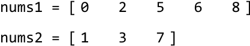
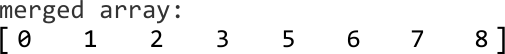

Find the Median From Two Sorted Arrays
MediumGiven two sorted integer arrays, find their median value as if they were merged into a single sorted sequence.
Example 1:
Input: nums1 = [0, 2, 5, 6, 8], nums2 = [1, 3, 7]
Output: 4.0
Explanation: Merging both arrays results in [0, 1, 2, 3, 5, 6, 7, 8], which has a median of (3 + 5) / 2 = 4.0.
Example 2:
Input: nums1 = [0, 2, 5, 6, 8], nums2 = [1, 3, 7, 9]
Output: 5.0
Explanation: Merging both arrays results in [0, 1, 2, 3, 5, 6, 7, 8, 9], which has a median of 5.
Constraints:
- At least one of the input arrays will contain an element.
Intuition
The brute force approach to this problem involves merging both arrays and finding the median in this merged array. This approach takes O((m+n)log(m+n)) time where m and n denote the lengths of each array, respectively. This complexity is primarily due to the cost of sorting the merged array of length m+n. This approach can be improved to O(m+n) time by merging both arrays in order, which is possible because both arrays are already sorted. However, is there a way to find the median without merging the two arrays?
In this explanation, we use "total length" to refer to the combined length of both input arrays. Let's discuss odd and even total lengths separately, as these result in two different types of medians.
Consider the following two arrays that have an even total length:

Below is what these two arrays would look like when merged. Let's see if we can draw any insights from this.

Observe that the merged array can be divided into two halves, which reveals the median values on the inner edge of each half.
![Image represents a visual depiction of splitting an array into two halves. A numerical array, represented by elements [0, 1, 2, 3, 5, 6, 7, 8] enclosed in square brackets, is shown. A dashed-line box visually separates the array into a 'left half' (elements 0, 1, 2, 3) and a 'right half' (elements 5, 6, 7, 8). The element '4' is seemingly absent. The text 'left half' in cyan is positioned below the left half of the array, while 'right half' in orange is below the right half. Upward-pointing arrows connect the end of the left half (element 3) with the text 'end of left half' in cyan above it, and the start of the right half (element 5) with the text 'start of right half' in orange above it. This illustrates the division point and the labeling of the two resulting sub-arrays.](images/06_05_find-the-median-from-two-sorted-arrays-img-32160f8b.svg)
A challenge here is identifying which values in either input array belongs to the left half of the merged array, and which belong to the right half. One thing we do know is the size of each half of the merged array: half of the total length.
Slicing both arrays
To figure out which values belong to each half, we can try "slicing" both arrays into two segments, where the left segments of both arrays and the right segments of both arrays each have 4 total values. Let's refer to the values on the left and right of the slice as the "left partition" and "right partition." Below are three examples of what this slice could look like:
![Image represents a visual depiction of a partitioning algorithm, likely quicksort, showing the process of dividing an array into smaller sub-arrays. Three stages are shown, each displaying an array represented as two horizontal rows of numbers enclosed in square brackets `[]`. The top row contains elements `[0, 2, 5, 6, 8]` in all three stages, while the bottom row contains `[1, 3, 7]` which remains constant. The arrays are partitioned using two colored lines: light blue for the 'left partition' and light orange for the 'right partition'. Triangles (pointing upwards) indicate pivot points within each partition. Numbers above the lines indicate the lengths of the partitions. A curved arrow labeled 'slice' shows the movement of the partition boundaries, illustrating how the algorithm iteratively divides the array. The legend clarifies that the arrow indicates data movement from the right partition to the left partition. The initial array is implicitly divided into two partitions based on the pivot. Subsequent stages show the refinement of these partitions, with the final stage suggesting a nearly sorted array.](images/06_05_find-the-median-from-two-sorted-arrays-img-1069b585.svg)
As we can see, there are several ways to slice the arrays to produce two partitions of equal size (4). However, only one of these slices corresponds to the halves of the merged array. In our example, it's this slice:
![Image represents a visual depiction of array splitting or partitioning. The top section shows two 2D arrays, one light blue containing the elements [0, 2] in the first row and [1, 3] in the second, and the other peach-colored containing [5, 6, 8] in the first row and [7] in the second. A vertical line separates these arrays. Light blue horizontal lines with small triangles at their ends indicate the lengths of the rows in the light blue array (2 elements in the top row and 2 in the bottom). Similarly, orange lines with triangles show the lengths of the rows in the peach array (3 elements in the top row and 1 in the bottom). The numbers '2' and '3' above the arrays indicate the lengths of the respective rows. The bottom section displays the same elements arranged as two 1D arrays: a light blue array [0, 1, 2, 3] and a peach array [5, 6, 7, 8], separated by a vertical line, representing the concatenated elements from the original 2D arrays. The diagram illustrates how a larger array might be conceptually divided into smaller sub-arrays, potentially for parallel processing or other algorithmic purposes.](images/06_05_find-the-median-from-two-sorted-arrays-img-9b1b379e.svg)
Let's refer to this as the "correct slice." We'll explain how to identify the correct slice shortly, but first, let's consider how to identify which slice correctly corresponds to the halves of the merged array.
Determining the correct slice
An important observation is that all values in the left partition must be less than or equal to the values in the right partition.
We can assess this by comparing the two end values of the left partition with the start values of the right partition (illustrated below). Let's refer to the end values of the left partition as L1 and L2, respectively. Similarly, let's call the start values of the right partition R1 and R2.
![Image represents a diagram illustrating a coding pattern, likely related to array or list comparisons. The diagram shows two rectangular regions, one light blue and one peach, representing potentially two different arrays or lists. Each region contains several black dots representing elements, and two circled elements labeled L1, L2 (light blue) and R1, R2 (peach). L1 and L2 are positioned at the right edge of their respective regions, while R1 and R2 are positioned at the left edge of their respective regions. A horizontal line connects the right edge of the light blue region to the left edge of the peach region. The text below the diagram specifies a condition to be checked: `(L1 ≤ R1, L1 ≤ R2)` and `(L2 ≤ R1, L2 ≤ R2)`. This indicates a comparison where the values of L1 and L2 (from the light blue region) are checked to see if they are less than or equal to the values of R1 and R2 (from the peach region). The brackets `[` and `]` around the elements suggest that the regions represent ordered sequences, possibly arrays or lists.](images/06_05_find-the-median-from-two-sorted-arrays-img-8e108d77.svg)
Since the values in each array are sorted, we know that conditions L1 ≤ R1 and L2 ≤ R2 are always true. Then, all we have to do is check that L1 ≤ R2 and L2 ≤ R1. We can observe how this comparison reveals the correct slice from the previous three example slices:
![Image represents three examples illustrating a coding pattern, possibly related to array partitioning or range checks. Each example shows a numerical array enclosed in square brackets, partitioned into sub-arrays. The first array in each example is split into two sub-arrays, with the partitioning point indicated by a vertical line. Numbers within the array are represented by circles; light blue circles represent the lower bounds of sub-arrays, and peach circles represent upper bounds. Below each example is a small box containing two inequality checks. The first example shows the array `[1, 3, 5, 6, 8]` partitioned at `5`, with checks `5 ≤ 3` (false, marked with 'x') and `1 ≤ 6` (true, marked with '✓'). The second example shows `[1, 3, 2, 5, 7]` partitioned at `2`, with checks `2 ≤ 7` (true, '✓') and `3 ≤ 5` (true, '✓'). The third example shows `[-∞, 1, 3, 6, 8]` partitioned at `6`, with checks `6 ≤ 1` (false, 'x') and `-∞ ≤ 8` (true, '✓'). The pattern appears to involve checking inequalities based on the partitioning point and elements within the sub-arrays.](images/06_05_find-the-median-from-two-sorted-arrays-img-6c0b8192.svg)
Notice that in the third example above, the second array does not contribute any values to the left partition. So, to work around this, we set the second array's left value to - so that L2 ≤ R1 is true by default.
Searching for the correct slice
Now, our goal is to search through all possible slices until we find the correct one. We do this by searching through all possible placements of L1, R1, L2, and R2. Note that we only need to search for L1 since the other three values can be inferred based on L1's index.
Let's take a closer look at how this works. Once we identify L1's index, we can calculate L2's index based on L1's index, which is demonstrated in the diagram below. R1 and R2 are just the values immediately to the right of L1 and L2, respectively.
![Image represents two diagrams illustrating a coding pattern, likely related to array partitioning. Each diagram shows a horizontal array represented by square brackets containing dots (representing array elements) and labeled circular nodes. The left diagram shows a light-blue node labeled 'L1' connected by a downward arrow from a rectangular box labeled 'L1_index'. 'L1' is connected horizontally to a light-blue node labeled 'L2' via a line labeled 'R2'. 'L2' is connected by an upward arrow to a rectangular box labeled 'L2_index'. The right diagram mirrors this structure but with 'L1' and 'R1' (peach-colored) nodes in gray, indicating a different state. A curved arrow connects 'L2_index' to 'R2', suggesting an iterative process. Below the diagrams, formulas describe the calculation of the number of left partition valves in two arrays, 'nums1' and 'nums2', based on 'L1_index' and 'half_total_len'. The final formula defines 'L2_index' as a function of 'half_total_len' and 'L1_index'. The diagrams visually represent the relationship between indices and array partitioning, while the formulas provide the mathematical logic behind the index calculations.](images/06_05_find-the-median-from-two-sorted-arrays-img-5a6aec45.svg)
Since we search for L1 over nums1, which is a sorted array, we can use binary search instead of searching for it linearly. The search space will encompass all values of the nums1.
Let's figure out how to narrow the search space. Here, we'll define the midpoint as L1_index, since it's also the index of L1. Let's discuss how the search space is narrowed based on these conditions:
-
If
L1 > R2, thenL1is larger than it should be because we expectL1to be less than or equal toR2. To search for a smallerL1, narrow the search space toward the left:![Image represents a visual depiction of a coding pattern, possibly related to array manipulation or indexing. Three rectangular boxes labeled 'left,' 'L1_index,' and 'right' point downwards to an array [0, 2, 5, 6, 8]. The number 5 is highlighted in light blue and labeled 'L1,' indicating a left index or pointer. Below this array, a sub-array [0, 3, 7] is shown, with 3 highlighted in light orange and labeled 'R2,' suggesting a right index or pointer. A dashed rectangular box contains the equation 'L1 > R2 → right = L1_index - 1,' illustrating a conditional statement: if the value at the left index (L1) is greater than the value at the right index (R2), then the 'right' variable is updated to be one less than the value of 'L1_index.' The diagram visually demonstrates the relationship between array indices, pointers, and a conditional update based on their values.](images/06_05_find-the-median-from-two-sorted-arrays-img-0de0c299.svg)
-
If
L2 > R1, thenR1is smaller than it should be because we expectR1to be less than or equal toL2. To search for a largerR1, narrow the search space toward the right:![Image represents a diagram illustrating a coding pattern, possibly related to array manipulation or searching. The diagram shows two arrays, labeled L1 and L2, represented as `[0 2 5 6 8]` and `[0 3 7 +∞]` respectively. The number 2 in L1 and 7 in L2 are highlighted in peach and light blue respectively, and labeled R1 and R2. Three rectangular boxes above L1 contain the labels 'left', 'L1_index', and 'right'. Arrows point from 'left' and 'L1_index' to the beginning of L1, indicating these variables might be used to index or access elements within L1. A dashed-line box displays the equation 'L2 > R1 → left = L1_index + 1', suggesting a conditional operation: if an element in L2 (specifically R2) is greater than an element in L1 (specifically R1), then the 'left' variable is updated to the value of 'L1_index' plus 1. This implies an iterative process where the 'left' index is adjusted based on comparisons between elements of L1 and L2. The '+∞' in L2 suggests a sentinel value or a boundary condition.](images/06_05_find-the-median-from-two-sorted-arrays-img-25a697de.svg)
-
If
L1 ≤ R2, andL2 ≤ R1, the correct slice has been located:![Image represents a diagram illustrating a coding pattern related to array slicing. At the top, a rectangular box labeled 'left L1_index right' points downwards with arrows to two sets of data. The first set is an array represented as `[0 2 5 6 8]`, where '2' is highlighted in light blue and labeled 'L1', and '5' is highlighted in light orange and labeled 'R1'. Below this, a second array `[0 3 7]` is shown, with '3' highlighted in light blue and labeled 'L2', and '7' highlighted in light orange and labeled 'R2'. A dashed rectangular box on the right states the condition 'L1 ≤ R2 and L2 ≤ R1' which, if true (indicated by a right-pointing arrow), results in a 'correct slice'. The diagram visually demonstrates how the indices 'L1', 'R1', 'L2', and 'R2' from two arrays are compared to determine if a slice is valid based on the condition.](images/06_05_find-the-median-from-two-sorted-arrays-img-2fbf9384.svg)
Search space optimization
A small optimization here is to ensure that nums1 is the smallest array between the two input arrays. This ensures our search space is as small as possible. If nums2 is smaller than nums1, we can just swap the two arrays, allowing nums1 to always be the smaller array.
Returning the median
Once binary search has identified the correct slice, we need to return the median. With an even total length, the median is calculated using the array's two middle values. From our set of partition slice values (L1, R1, L2, and R2), which of them are the middle two? We know one of the median values is from the left partition and the other is from the right partition. From the left partition, the largest value between L1 and L2 will be closest to the middle. From the right, the smallest value between R1 and R2 is closer to the middle:
![Image represents a visual explanation of a merge sort algorithm step. Two arrays, `[0 2 5 6 8]` and `[0 3 7]`, are shown, with their elements visually separated by a vertical line. Light blue circles highlight the numbers 2 and 3 in the respective arrays, indicating these are the largest element in the left array and the smallest element in the right array, respectively. A curved arrow points from the 3 to indicate that it's the smallest element on the right, and another curved arrow points to the 3 from the left to indicate that it's the largest element on the left. An orange circle highlights the number 5 in the right array, indicating it's the smallest element in that array. Below, a merged array `[0 1 2 3 5 6 7 8]` is displayed, showing the result of merging the two input arrays in sorted order. The numbers 1 and 2 are implicitly understood to be part of the merged array, as they are the next smallest elements after 0. The diagram illustrates the process of selecting the smallest element from the right array and the largest element from the left array during the merging phase of the merge sort.](images/06_05_find-the-median-from-two-sorted-arrays-img-90aa829c.svg)
So, to return the median, we just return the sum of these two values, divided by 2 using floating-point division.
What if the total length of both arrays is odd?
The main difference when the total length of both arrays is odd compared to an even length is that we can no longer slice the arrays into two equal halves. One half must have an additional value.
![Image represents a demonstration of merging two sorted arrays. The top line shows an array named `nums1` containing the integer elements [0, 2, 5, 6, 8]. The second line displays another array, `nums2`, with elements [1, 3, 7, 9]. Below these, labeled 'merged array:', is the result of merging `nums1` and `nums2` into a single sorted array: [0, 1, 2, 3, 5, 6, 7, 8, 9]. The elements from `nums1` are shown in black, while elements from `nums2` are displayed in light blue and orange, illustrating their origin within the merged array. There are no URLs or parameters present; the image solely depicts the data structures and the outcome of the merging operation.](images/06_05_find-the-median-from-two-sorted-arrays-img-39a6464c.svg)
The diagram above shows that the right half ends up with one extra value. This is because when we calculate the slice position, we ensure the left half has a size of half the total length. In this example, this calculation using integer division gives us a left half size of (5 + 4) // 2 = 4. Consequently, this means the right half ends up with 5 values. When the total length is odd, the median can be found in the right half:
![Image represents a partially merged array visualized during a merge sort algorithm. The text 'merged array:' labels a numerical array represented within square brackets `[]`. The array contains elements colored in two different colors: `0`, `1`, `2`, and `3` are displayed in cyan, while `5`, `6`, `7`, `8`, and `9` are in orange. A vertical bar `|` and brackets `[]` highlight the number `5` within the orange section. An orange curved arrow points from the text 'start of right half' to the highlighted `5`, indicating that this element represents the beginning of the right half of an array that is being merged with a left half (represented by the cyan numbers). The overall image illustrates a step in the merge sort process where the algorithm is combining sorted sub-arrays.](images/06_05_find-the-median-from-two-sorted-arrays-img-91e1e736.svg)
So, after the binary search narrows down the correct slice, we can just return the smallest value between R1 and R2.
![Image represents a visual illustration of a sorting algorithm, specifically highlighting a step where the smallest element is placed at the rightmost position. Two arrays, represented as rows, are shown. The first array contains the numbers 0, 2, 5, 6, and 8, enclosed in square brackets. The second array contains 0, 3, and 7, also enclosed in square brackets. Numbers 2 and 3 are circled in light blue, while 5 and 7 are circled in a peach color. A vertical line separates the light blue circled numbers from the peach circled numbers and the remaining uncircled numbers. An orange arrow points from the text 'smallest on the right' to the peach-colored circle containing the number 5, indicating that 5 is the smallest element among the numbers to the right of the vertical line in the first array. The arrangement visually demonstrates a partitioning step in a sorting algorithm, where smaller elements are moved to one side.](images/06_05_find-the-median-from-two-sorted-arrays-img-52820266.svg)
[Interactive code editor — visit bytebytego.com to run]
Implementation
from typing import List
def find_the_median_from_two_sorted_arrays(nums1: List[int], nums2: List[int]) -> float:
# Optimization: ensure 'nums1' is the smaller array.
if len(nums2) < len(nums1):
nums1, nums2 = nums2, nums1
m, n = len(nums1), len(nums2)
half_total_len = (m + n) // 2
left, right = 0, m - 1
# A median always exists in a non-empty array, so continue binary search until
# it's found.
while True:
L1_index = (left + right) // 2
L2_index = half_total_len - (L1_index + 1) - 1
# Set to -infinity or +infinity if out of bounds.
L1 = float('-inf') if L1_index < 0 else nums1[L1_index]
R1 = float('inf') if L1_index >= m - 1 else nums1[L1_index + 1]
L2 = float('-inf') if L2_index < 0 else nums2[L2_index]
R2 = float('inf') if L2_index >= n - 1 else nums2[L2_index + 1]
# If 'L1 > R2', then 'L1' is too far to the right. Narrow the search space
# toward the left.
if L1 > R2:
right = L1_index - 1
# If 'L2 > R1', then 'L1' is too far to the left. Narrow the search space
# toward the right.
elif L2 > R1:
left = L1_index + 1
# If both 'L1' and 'L2' are less than or equal to both 'R1' and 'R2', we
# found the correct slice.
else:
if (m + n) % 2 == 0:
return (max(L1, L2) + min(R1, R2)) / 2.0
else:
return min(R1, R2)
export function find_the_median_from_two_sorted_arrays(nums1, nums2) {
// Optimization: ensure 'nums1' is the smaller array.
if (nums2.length < nums1.length) {
;[nums1, nums2] = [nums2, nums1]
}
const m = nums1.length
const n = nums2.length
const halfTotalLen = Math.floor((m + n) / 2)
let left = 0,
right = m - 1
// A median always exists in a non-empty array, so continue binary search until
// it's found.
while (true) {
const L1Index = Math.floor((left + right) / 2)
const L2Index = halfTotalLen - (L1Index + 1) - 1
// Set to -infinity or +infinity if out of bounds.
const L1 = L1Index < 0 ? -Infinity : nums1[L1Index]
const R1 = L1Index >= m - 1 ? Infinity : nums1[L1Index + 1]
const L2 = L2Index < 0 ? -Infinity : nums2[L2Index]
const R2 = L2Index >= n - 1 ? Infinity : nums2[L2Index + 1]
// If 'L1 > R2', then 'L1' is too far to the right. Narrow the search space
// toward the left.
if (L1 > R2) {
right = L1Index - 1
}
// If 'L2 > R1', then 'L1' is too far to the left. Narrow the search space
// toward the right.
else if (L2 > R1) {
left = L1Index + 1
}
// If both 'L1' and 'L2' are less than or equal to both 'R1' and 'R2', we
// found the correct slice.
else {
if ((m + n) % 2 === 0) {
return (Math.max(L1, L2) + Math.min(R1, R2)) / 2
} else {
return Math.min(R1, R2)
}
}
}
}
import java.util.ArrayList;
public class Main {
public double find_the_median_from_two_sorted_arrays(ArrayList nums1, ArrayList nums2) {
if (nums2.size() < nums1.size()) {
ArrayList temp = nums1;
nums1 = nums2;
nums2 = temp;
}
int m = nums1.size();
int n = nums2.size();
int half_total_len = (m + n) / 2;
int left = 0, right = m;
// A median always exists in a non-empty array, so continue binary search until it's found.
while (true) {
int L1_index = (left + right) / 2 - 1;
int L2_index = half_total_len - (L1_index + 1) - 1;
// Set to -infinity or +infinity if out of bounds.
int L1 = (L1_index < 0) ? Integer.MIN_VALUE : nums1.get(L1_index);
int R1 = (L1_index + 1 >= m) ? Integer.MAX_VALUE : nums1.get(L1_index + 1);
int L2 = (L2_index < 0) ? Integer.MIN_VALUE : nums2.get(L2_index);
int R2 = (L2_index + 1 >= n) ? Integer.MAX_VALUE : nums2.get(L2_index + 1);
// If 'L1 > R2', then 'L1' is too far to the right. Narrow the search space toward the left.
if (L1 > R2) {
right = (L1_index + 1) - 1;
}
// If 'L2 > R1', then 'L1' is too far to the left. Narrow the search space toward the right.
else if (L2 > R1) {
left = (L1_index + 1) + 1;
}
// If both 'L1' and 'L2' are less than or equal to both 'R1' and 'R2', we found the correct slice.
else {
if ((m + n) % 2 == 0) {
return (Math.max(L1, L2) + Math.min(R1, R2)) / 2.0;
} else {
return Math.min(R1, R2);
}
}
}
}
}
Complexity Analysis
Time complexity: The time complexity of find_the_median_from_two_sorted_arrays is O(log(min(m,n))) because we perform binary search over the smaller of the two input arrays.
Space complexity: The space complexity is O(1).
Note: this explanation refers to the two middle values as "median values" to keep things simple. However, it's important to understand that these two values aren't technically "medians," as there's only ever one median. These are just the two values used to calculate the median.